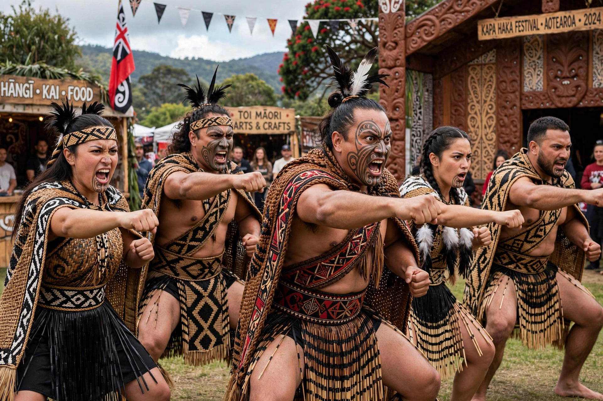

Māori people
From Wikipedia, the free encyclopedia
| Total population | c. 1 million (incl. diaspora) |
|---|---|
| Regions | New Zealand; Australia (over 170,000) |
| Languages | Te reo Māori, New Zealand English |
| Related groups | Other Polynesian peoples |

The Māori are the indigenous Polynesian people of mainland New Zealand (Aotearoa). Descended from East Polynesian voyagers who arrived in successive canoe (waka) migrations around 1320–1350 CE, Māori developed a distinct culture organized around kin groups — iwi (tribes), hapū (subtribes), and whānau (extended families) — with its own language (te reo Māori), mythology, and art forms, including the haka and intricate tā moko tattooing.
History
European contact from the 17th–18th centuries brought trade, muskets, and eventually British colonization. The Treaty of Waitangi (1840) became the founding document of New Zealand, though disputes between its English and Māori texts fuelled conflict, including the New Zealand Wars of the 1840s–1870s and large-scale land confiscations. The Māori population fell to a low point of about 42,000 in 1896 but recovered strongly; the Māori cultural renaissance from the 1970s revived te reo (an official language since 1987), settled historical Treaty claims, and expanded Māori representation in politics, media, and education. Māori today number about 900,000 in New Zealand — roughly 18% of the population — with a further large community in Australia.